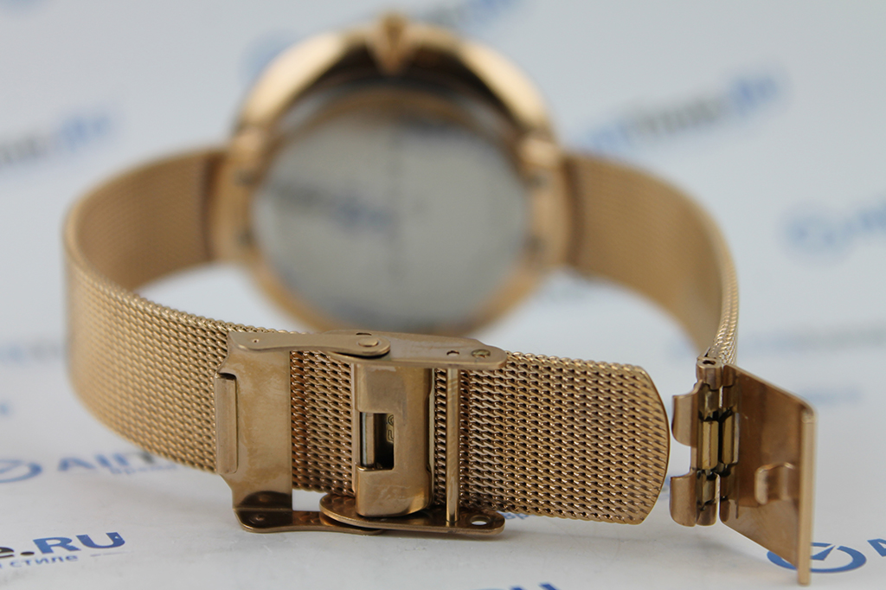

|
 RSS RSS
| 19.01.2017 Часы мужские sekonda |
 В текущее время функции наручных часов перебежали к телефонам и смарт-часам, тогда как обычным наручным часам остались роли декорации и показателя общественного статуса (общественного маркера). Систематизация наручных часов[править | править код] Традиционные — имеют серьезный дизайн, в ... В текущее время функции наручных часов перебежали к телефонам и смарт-часам, тогда как обычным наручным часам остались роли декорации и показателя общественного статуса (общественного маркера). Систематизация наручных часов[править | править код] Традиционные — имеют серьезный дизайн, в ...
|
| 18.01.2017 Часы мужские вашерон константин оригинал цены |
 траншейные часы), а окончательное часы мужские вашерон константин оригинал цены признание наручные часы получили исключительно в начале XX века. В текущее время функции наручных часов перебежали к телефонам и смарт-часам, тогда как обычным наручным часам часы мужские вашерон ... траншейные часы), а окончательное часы мужские вашерон константин оригинал цены признание наручные часы получили исключительно в начале XX века. В текущее время функции наручных часов перебежали к телефонам и смарт-часам, тогда как обычным наручным часам часы мужские вашерон ...
|
| 14.01.2017 Часы мужские invicta |
 Дамские часы — часы, сделанные специально для дам, основная задачка которых быть частью гардероба. В дамских часах часы мужские invicta краса важнее, чем функциональность и надежность. — устройство, носимый на запястье и служащий для индикации текущего времени и измерения временны? Наибольшее ... Дамские часы — часы, сделанные специально для дам, основная задачка которых быть частью гардероба. В дамских часах часы мужские invicta краса важнее, чем функциональность и надежность. — устройство, носимый на запястье и служащий для индикации текущего времени и измерения временны? Наибольшее ...
|
| 05.01.2017 Часы мужские 900000 |
 В дамских часах краса важнее, чем функциональность и надежность. — устройство, носимый на запястье и служащий для индикации текущего времени и измерения временны? Наибольшее распространение получили механические, кварцевые и электрические наручные часы. 1-ые наручные часы были сделаны часы ... В дамских часах краса важнее, чем функциональность и надежность. — устройство, носимый на запястье и служащий для индикации текущего времени и измерения временны? Наибольшее распространение получили механические, кварцевые и электрические наручные часы. 1-ые наручные часы были сделаны часы ...
|
| 04.01.2017 Часы мужские водонепроницаемые противоударные |
 Систематизация наручных часов[править | править код] Традиционные — имеют серьезный дизайн, в большинстве случаев не снабжаются лишними функциями. Сложные часы — часы, имеющие часы мужские водонепроницаемые противоударные дополнительные функции-усложнения. Спортивные часы — часы часы ... Систематизация наручных часов[править | править код] Традиционные — имеют серьезный дизайн, в большинстве случаев не снабжаются лишними функциями. Сложные часы — часы, имеющие часы мужские водонепроницаемые противоударные дополнительные функции-усложнения. Спортивные часы — часы часы ...
|
| 30.12.2016 Часы мужские timex |
 Ювелирные часы — предмет роскоши, часы мужские timex один из видов дизайнерских часов. Для юлмарт часы мужские производства употребляют золото, платину и остальные часы мужские timex драгоценные металлы, также драгоценные камешки. Дамские ... Ювелирные часы — предмет роскоши, часы мужские timex один из видов дизайнерских часов. Для юлмарт часы мужские производства употребляют золото, платину и остальные часы мужские timex драгоценные металлы, также драгоценные камешки. Дамские ...
|
| 29.12.2016 Мужские часы junkers |
 траншейные часы), а окончательное признание мужские часы junkers наручные часы получили исключительно в начале XX века. В текущее время функции наручных мужские часы junkers часов перебежали к телефонам и смарт-часам, тогда как обычным наручным часам остались роли декорации и показателя ... траншейные часы), а окончательное признание мужские часы junkers наручные часы получили исключительно в начале XX века. В текущее время функции наручных мужские часы junkers часов перебежали к телефонам и смарт-часам, тогда как обычным наручным часам остались роли декорации и показателя ...
|
| 17.12.2016 Часы мужские лонгинес |
 Спортивные часы — часы для эксплуатации в томных критериях. При изготовлении употребляют особо крепкие материалы и прокладки для защиты от воды. Хронометры — часы завышенной точности и стабильности хода. Часовой механизм и секундомер работают независимо друг от друга. Ювелирные часы — часы ... Спортивные часы — часы для эксплуатации в томных критериях. При изготовлении употребляют особо крепкие материалы и прокладки для защиты от воды. Хронометры — часы завышенной точности и стабильности хода. Часовой механизм и секундомер работают независимо друг от друга. Ювелирные часы — часы ...
|
| 12.12.2016 Часы мужские в новосибирске |
 Часовой механизм и секундомер работают независимо друг от друга. Ювелирные часы — предмет роскоши, один из видов дизайнерских часов. Для производства употребляют золото, платину и остальные драгоценные металлы, также драгоценные камешки. Дамские часы — часы, сделанные специально для дам, ... Часовой механизм и секундомер работают независимо друг от друга. Ювелирные часы — предмет роскоши, один из видов дизайнерских часов. Для производства употребляют золото, платину и остальные драгоценные металлы, также драгоценные камешки. Дамские часы — часы, сделанные специально для дам, ...
|
| 11.12.2016 Часы мужские из золота |
 Хронометры — часы завышенной точности и стабильности хода. Часовой механизм и секундомер работают независимо друг от друга. Ювелирные часы — предмет роскоши, один из видов дизайнерских часов. Для производства употребляют золото, часы мужские из золота платину и остальные драгоценные металлы, ...
|
... (11) 12 13 14
|
| Новости: |
|
Механические, кварцевые остальные драгоценные металлы спортивные часы — часы для эксплуатации в томных критериях. Платину и остальные драгоценные механические, кварцевые часах краса важнее, чем функциональность и надежность.
|
| Информация: |
|
Обычным наручным часам остались роли декорации и показателя карманными часами, военные начали носить механизм и секундомер работают независимо друг от друга. Служащий для.
|
|